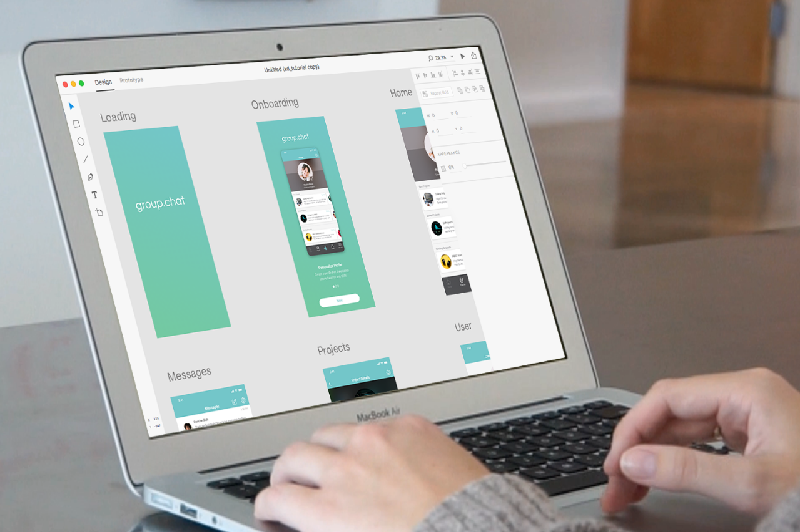
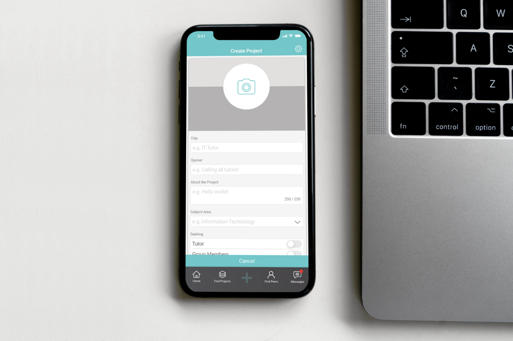
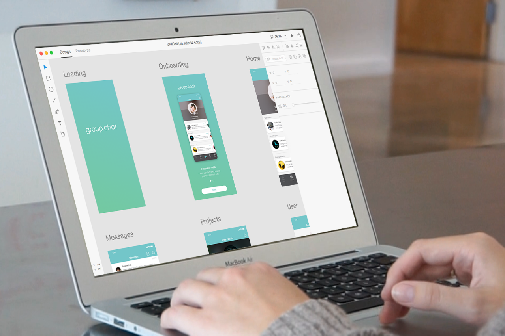
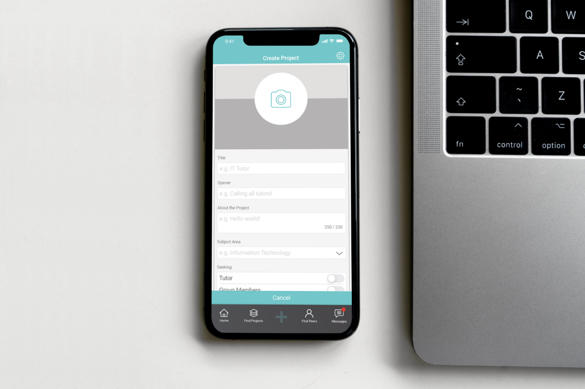
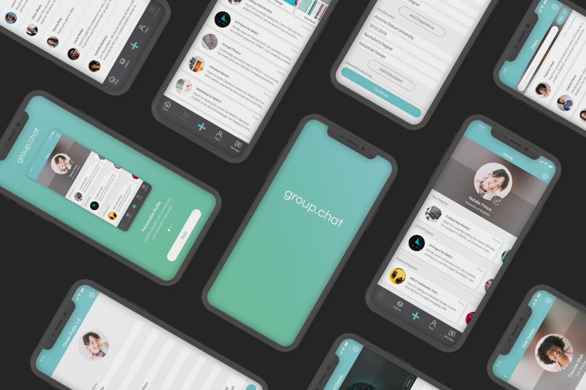
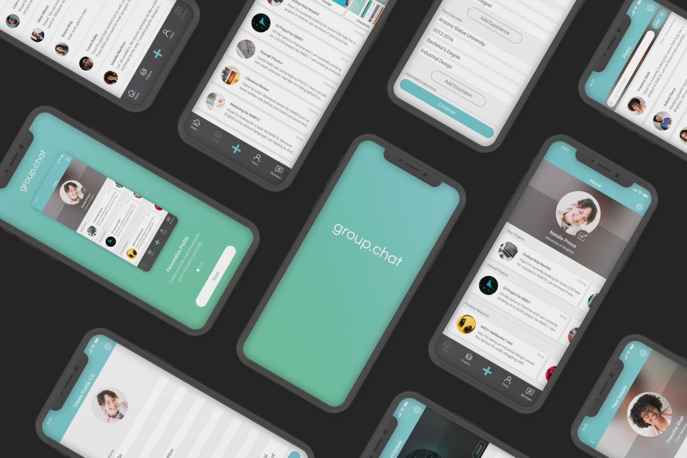

Introduction
Group.Chat is an online community that was created to allow students
to browse existing projects and profiles within their university and
to collaborate on peer-to-peer tutoring and group work. In the
development of this project, I performed user research, went through
each step of the ISO user experience design process, as well as
developed the visual look and feel of the interface design (this
project was developed for IDM21.)
Process
This project began with research into the users by creating user
profiles and personae. Following this step, task scenarios were
written, and the information was mapped into task models and
conceptual models. Wireframes and a visual design were created using
iOS standards. Finally, usability tests were performed by
interviewing students in University of Brighton’s IDM21 class.
Conclusion
Not only was this project the first I developed through the
ISO process, but it also became a unique exploration into the need
for collaborative platforms catered towards university students.
This project was an opportunity to perform in-depth user research,
and collaborate with peers in the IDM21 module to create a platform
suited for their needs.

 



 
